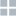

- 


导出名单 + 添加嘉宾
-
张三
南京大学软件学院副院长1
-
李四
南京大学软件学院副院长2
-
王二
南京大学软件学院副院长3
-
李四
南京大学软件学院副院长4
张三
南京大学软件学院副院长
Dr. Pei obtained his B.S. degree from Wuhan University in and Ph.D. degree from the Institute of Process Engeering, the Chinese Academy of Sciences in 2002. Then he worked as a postdoctoral fellow in Peking university and SUNY Buffalo. In 2007, he joined the Academy for Advanced Interdisciplinary Studies, Peking University as a faculty member. His research focused on structure-based drug design and drug discovery using artificial intellectual techniques. He has published more than 50 papers in peer-eviewed journals including JACS, PNAS, NAR. and J Med. Chem.
2018-9-27
全球化战略转型实践与探索8:30-9:30
101会议室
精益制造理念与实践
9:30-10:30
101会议室
2018-9-28
玉米收获机割台仿生降损技术研究8:30-9:30
201会议室
姓名： 张三
嘉宾简介： 南京大学软件学院副院长
Dr. Pei obtained his B.S. degree from Wuhan University in and Ph.D. degree from the Institute of Process Engeering, the Chinese Academy of Sciences in 2002. Then he worked as a postdoctoral fellow in Peking university and SUNY Buffalo. In 2007, he joined the Academy for Advanced Interdisciplinary Studies, Peking University as a faculty member. His research focused on structure-based drug design and drug discovery using artificial intellectual techniques. He has published more than 50 papers in peer-eviewed journals including JACS, PNAS, NAR. and J Med. Chem.